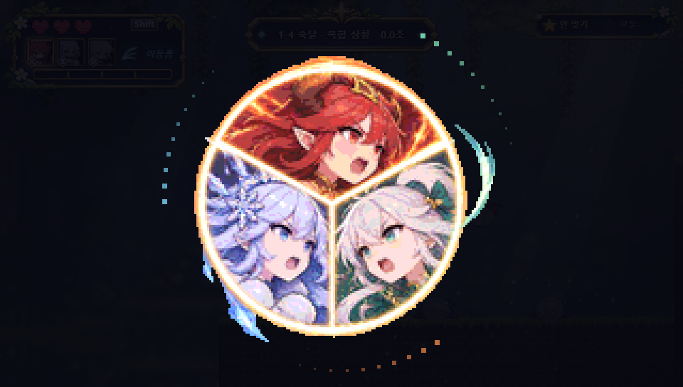
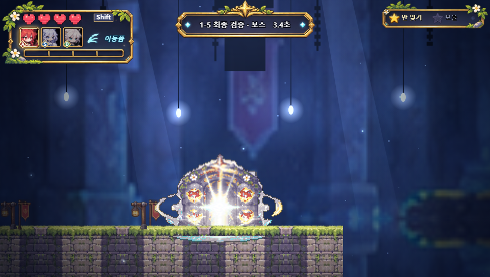
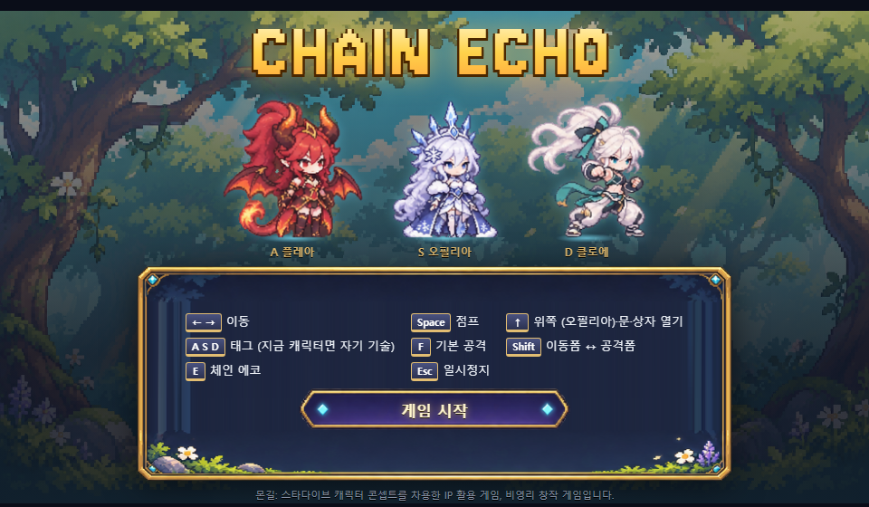
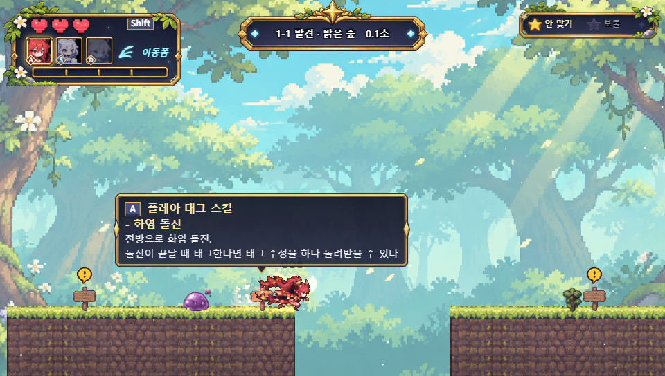
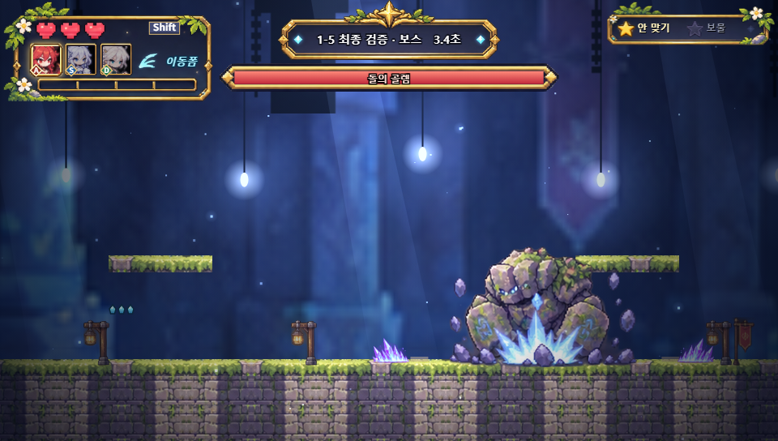
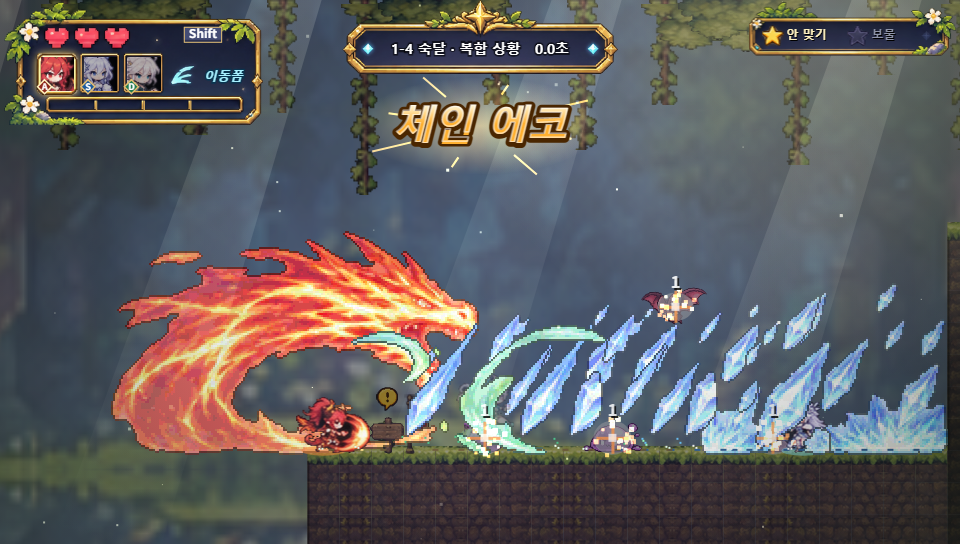

레퍼런스 에셋을 게임 톤에 녹이기
- AI 이미지 도구로 만든 문과 필살기 이펙트를 그대로 넣자, 고해상도 그림이 도트 배경 위에 떠 보였습니다.
그대로 적용하지 말고
톤앤매너에 맞추도록 요청하고, 방향 후보 중 "게임 도트에 맞춰 다시 칠하기"를 골랐습니다.- AI가 도트 굵기·색 단계·외곽선을 캐릭터와 맞추고, 월드 클리어 문은 사원 벽돌 색으로 다시 칠했습니다.
결정 기록 · 배운 것 장부
앞의 두 게임에서 확인한 태그의 재미를 바탕으로, 세 캐릭터를 태그로 이어 길을 여는 2D 도트 플랫포머를 만들었습니다. 스테이지 1-1부터 1-5의 보스까지, 한 판은 스테이지 하나입니다.
이 페이지는 레퍼런스를 정하고 AI로 에셋을 만든 뒤, 게임의 톤에 맞게 다시 맞춰 넣은 과정과 AI와 일한 방식을 정리했습니다.







그림과 소리는 제가 레퍼런스와 방향을 정해 AI 이미지·사운드 도구로 만들고, Claude Code는 그것을 게임에 맞게 자르고 다시 칠해 넣었습니다. 무엇을 만들지와 완성 여부는 제가 직접 플레이하며 판단했습니다.
게임 1·2에서 다듬은 작업 규칙 파일(CLAUDE.md)과 /start /end /retro 명령, reviewer 역할을 그대로 이어받아 일했습니다.
단계마다 완료 기준을 정하고, 기준을 충족해야 다음 단계로 넘어갔습니다.
게임 1·2에서 확인한 태그의 재미에서 출발해, 전투와 이동 모두에서 태그의 맛을 살리는 창작 게임으로 정했습니다 (idea.md).
상황·문제·목표를 직접 쓰고, 스테이지 1-1~1-5, 별 셋, 태그와 세 기술, 보스까지 완료 기준으로 정리했습니다 (problem.md). reviewer 검토를 거쳐 다듬었습니다.
핵심 루프를 한 문장으로 정하고 작업 8개로 나누었습니다 (tasks.md). 엔진은 웹(HTML과 자바스크립트)으로 정했습니다.
첫 판을 만들어 웹 링크로 배포했습니다. 작업마다 그 시점의 판을 steps/ 폴더에 보관해 53단계의 기록이 남았습니다.
레퍼런스 에셋을 넣고 직접 플레이하며 위치·톤·적중감을 다듬었습니다. 처음 해 보는 사람에게 플레이 테스트를 받았습니다.
README에 에셋 출처와 만든 이유를 정리했습니다.
바닥에서 붕 떠서 다른 에셋들과 어울리지 않는→ 이펙트 그림의 빈 여백을 잘라 내고, 캐릭터가 딛는 땅에 맞춤
마지막 타격은 가운데 부분에서 일어나야해→ 폭발이 가장 빽빽한 곳을 재서 화면 가운데에 배치
문의 위치마저 움직이는→ 원인이 따라오던 화면임을 찾아, 문이 열리는 동안 화면을 멈춤
떨어지기 직전 발판에서 다시 시작해야지→ 낭떠러지 끝이면 한 칸 반 안쪽에서, 잠깐 방향키를 받지 않게
게임 2 회고에서 정한 세 가지(완결성, 자연스러운 레벨디자인, 그래픽 퀄리티)를 게임 3에 적용하며 일하는 방식을 바꿨습니다.
필살기 이펙트를 AI가 도형으로 그렸습니다. 레퍼런스의 그림 품질에 미치지 못했습니다.
장면별 레퍼런스를 정해 AI 이미지 도구로 이펙트 시트를 만들고, Claude Code가 캐릭터와 같은 굵기의 도트·색 단계·외곽선으로 다시 칠해 넣었습니다.
"가운데", "바닥" 같은 위치를 그림 크기로 짐작해 배치했습니다. 그림에 빈 여백이 있어 실제로 보이는 위치와 달랐습니다.
그림의 여백을 잘라 내고, 화면에 가운데 선과 바닥 선을 그어 찍은 뒤 숫자로 맞췄습니다. 실제로 보이는 크기를 고려한 배치를 제가 직접 잡아 주었습니다.
게임 2에서는 테스터가 태그보다 회피를 훨씬 자주 썼습니다. 태그의 이점이 충분히 전달되지 않았습니다.
스테이지마다 그 기술이 필요한 지형을 두고, 그 앞에 표지판을 세웠습니다. 표지판 문장 13개는 제가 직접 썼습니다.
소리를 코드로 만든 짧은 음으로 냈습니다.
레퍼런스와 방향을 정해 AI로 효과음 50개를 만들고, 전자음은 충격음으로 다시 만들었습니다. 음량은 소리마다 세기를 재서 쓰임새별로 맞췄습니다.
제가 판단하고 AI가 구현한 사례와, AI가 스스로 문제를 찾거나 자동으로 막아 낸 사례입니다. 인용은 작업 중 결정 기록에 남은 제 말입니다.
그대로 적용하지 말고톤앤매너에 맞추도록 요청하고, 방향 후보 중 "게임 도트에 맞춰 다시 칠하기"를 골랐습니다.
결정 기록 · 배운 것 장부
플레아가 왼쪽에서 치고 오필리아가 오른쪽에서, 그리고 가운데에서 클로에가치는 흐름을 정했습니다.
결정 기록
결정 기록 · 기획 문서
결정 기록 · assets/sfx/README.md
결정 기록
check/g3check.js
결정 기록
결정 기록
AI가 틀린 부분은 즉시 배운 것 장부에 기록했습니다. 게임 1·2에서 쌓은 규칙을 이어받아 게임 3에 적용했고, 반복되는 문제는 규칙이나 검사로 막았습니다.
| 반복된 문제 | 대응 | 판정 |
|---|---|---|
| AI가 그릴 그림이 사용자 그림과 어울리지 않음 (게임 2) | AI가 그릴 그림이 사용자 그림 옆이면 먼저 사용자 그림을 받을지 질문 | 효과 있음 |
| 바탕 문서의 단서와 [미결정] 표시가 옮기면서 빠짐 | 기준을 내기 전에 바탕 문서와의 대조표를 먼저 보이고 빠진 것 0 확인 | 효과 있음 |
| 에셋이 게임 톤과 어긋남 | 크기·도트 굵기·색·바닥 닿음을 게임 안 그림과 맞대 보고, 방향이 여럿이면 후보를 먼저 보여 고르게 함 | 장부로 관리 |
| 위치를 짐작으로 보고 | 검사 장면에 가운데 선·바닥 선을 그어 재고 숫자로 보고 | 검사로 전환 |
| 이미 맡긴 일을 다시 물음 | 방향이 정해진 일은 묻지 않고 이어서 진행 | 다음 게임에서 판정 |
배운 것 장부는 세 게임을 거치며 99줄이 쌓였고, 작업 규칙은 20번 고쳤습니다.
에셋의 출처는 레퍼런스 확보 후 AI로 재가공, 이후 실제 확인을 통하여 수정. 키 비주얼에 대하여 위치를 지속적으로 잘못 잡아 이를 확인하도록 요구. 에셋의 크기가 실제 보이는 것과 다른 점을 확인하여 이를 고려한 배치를 직접 잡아주었다.
게임 3의 목표: 창작 게임을 통하여 핵심 재미요소를 차용한 새로운 형태의 게임을 만드는 것을 목표로 한다.
몬길: 스타다이브 캐릭터 콘셉트를 차용한 IP 활용 게임, 비영리 창작 게임입니다. 원작의 그림과 소리는 사용하지 않았습니다. 위 화면은 실제 게임을 실행해 찍은 장면입니다. PC 키보드로 플레이합니다.